Administracion del DC
La gran parte del tiempo el administrador de un AD se encontrará con lo siguiente:
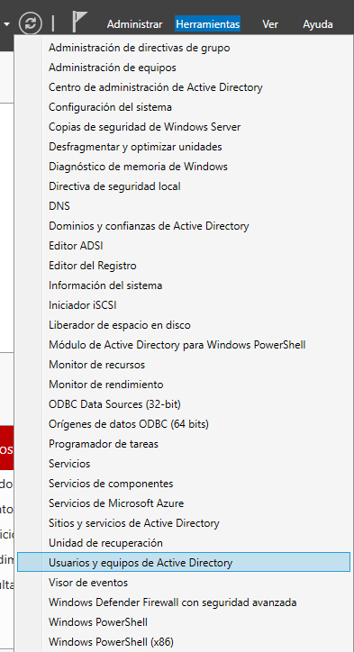
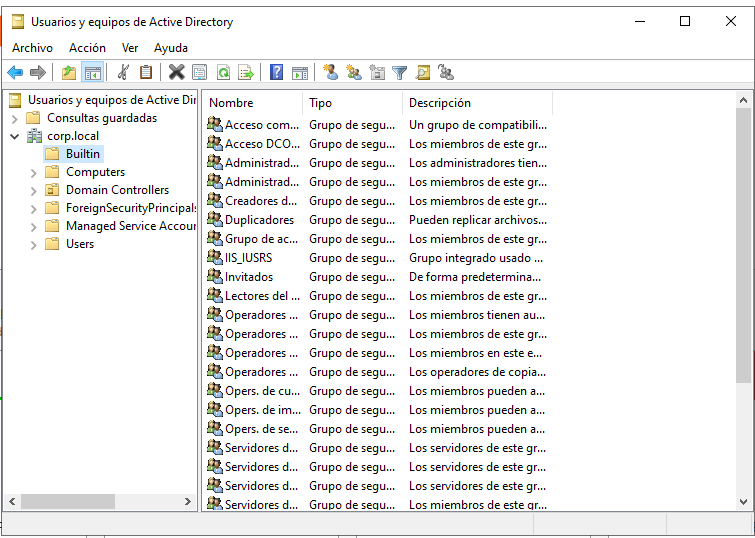
Aquí
encontraremos nuestro dominio y algunos subdirectorios donde se almacenarán los objetos de nuestro Active Directory, ya que todo se almacena en forma de objetos. Hay que tener en cuenta que en esta interfaz encontraremos directorios vacíos que simplemente sirven para agrupar visualmente algunos grupos pero no pueden ser considerados objetos
.
Los contenedores que vemos con un icono cuadrado junto a la carpeta se tratan de OUs (Unidades organizativas) y son muy importantes porque sobre ellas aplicaremos las políticas
.
Como vemos aparecen las maquinas creadas:
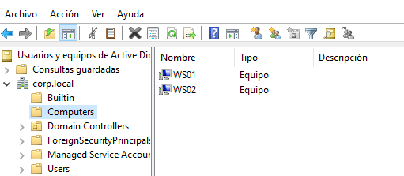
Como vemos también en este caso en nuestra unidad organizativa unicamente contamos con un controlador de domino que es el Windows Server que hemos configurado pero en esta organización pueden encontrarse o añadirse más de un controlador de dominio
:
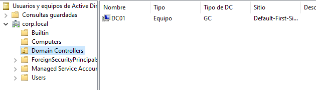
En el apartado de usuarios veremos todos los usuarios disponibles que hayamos creado manualmente y que se hayan creado de forma automática
:
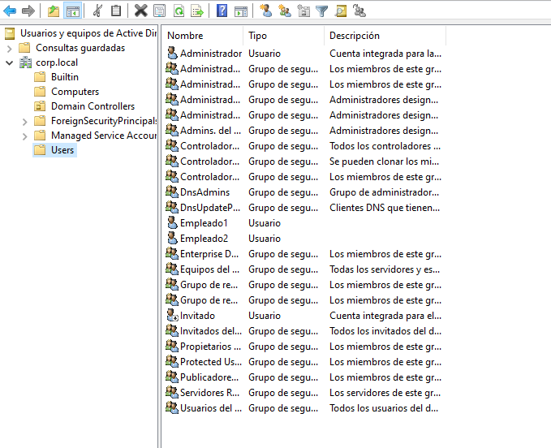
Como apunte, lo normal es que la administración de los usuarios se haga desde esta interfaz haciendo click derecho y usuario:
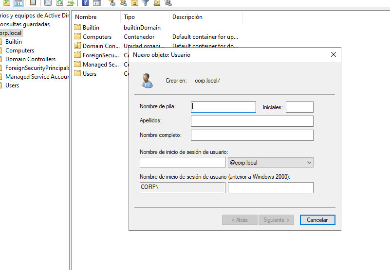
Como vemos es interesante que se le proporcionan dos métodos de inicio de sesión, uno con el dominio de la empresa o infraestructura y otro con un nombre de usuario como “directorio”
.
Ahora vamos a ver como aplicar políticas a una OUs creando un departamento concreto para que los usuarios dentro de ese departamento se adapten a esas políticas
.
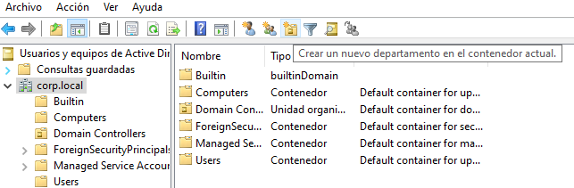
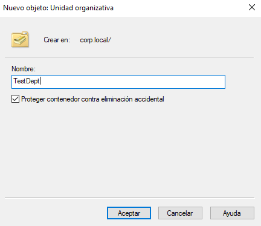
Asignamos nombre de prueba
.
Ahora desde esta interfaz podemos arrastras los usuarios para asignarlos a su departamento dentro de esa unidad organizativa
.
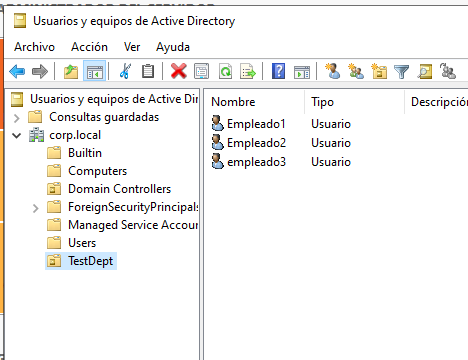
Algo más que puede hacer el administrador de dominio es crear un grupo de usuarios:
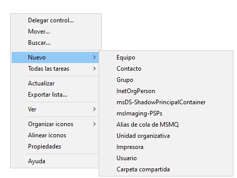
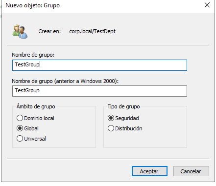
Esto asigna un grupo dentro de ese departamento en los que podremos asignar diferentes permisos en función del grupo.
Aquí es importante el ámbito del grupo ya que puede ser:
- Universal: aplica a nivel de forest, a todos los que tuviésemos
- Global: aplica a todos los dominios dentro de este forest
- Dominio local: que aplica al dominio en el que se encuentran
- Seguridad: grupo en el que se introducen usuarios para aplicarles políticas de seguridad.
- Distribución: para crear una lista de usuarios a la que le lleguen por ejemplo unos correos concretos.
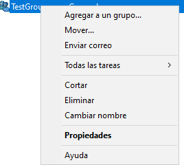
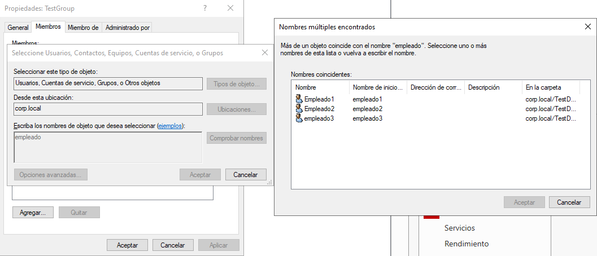
En sus propiedades podemos buscar por nombre y añadirlos al grupo
.
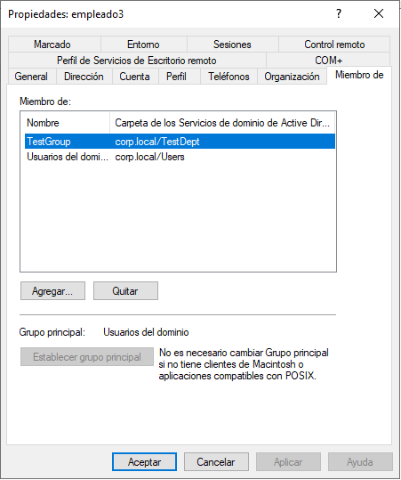
En las propiedades de los usuarios ahora vemos que pertenecen a el grupo por defecto que crea el AD y el que hemos creado
.
Otra cosa a tener en cuenta es que los grupos pueden ser miembros de otros grupos; por ejemplo podemos añadir este grupo nuevo a el grupo de administradores heredando así los permisios de administración
Esto es importante porque en grandes empresas o infraestructuras a veces debido a la cantidad de grupos, usuarios, etc esto puede llevar a malas realciones o configuraciónes de permisos entre grupos y ser brechas de seguridad
.
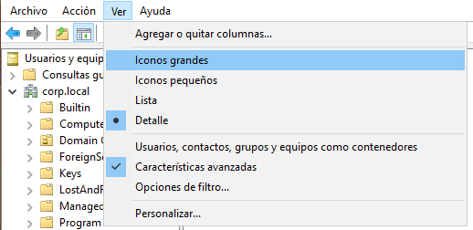
Para ver más información de nuestro dominio podemos activar las características avanzadas
.
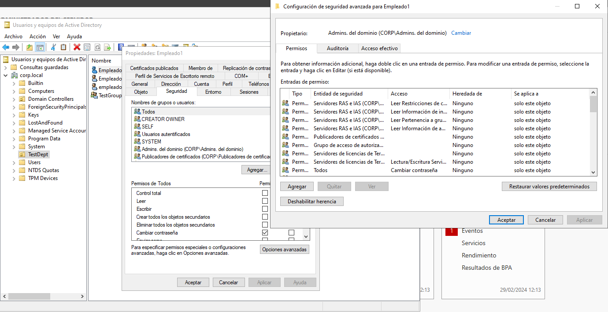
Si vemos ahora las propiedades de un usuario veremos que objetos tienen qué permisos sobre él y qué permisos tiene él sobre que objetos.
La siguiente herramienta importante es la “Administración de directivas de grupo”.
Aquí se encuentran las políticas que se aplican a diferentes objetos
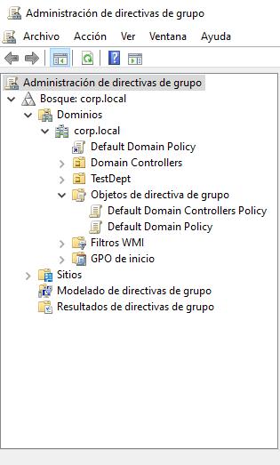
Como vemos aquí tenemos nuestros dominios, con nuestro objetos sobre los que aplicaremos las políticas (OUs) y más abajo vemos los GPO que son las políticas que se crean por defecto, siendo Domain controllers policy que aplica a nivel de controlador del dominio y el domain policy que aplica a el contenido del dominio
.
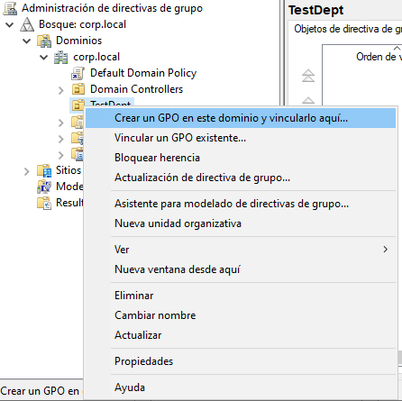
Vamos a crear una política para la organización administrativa
.
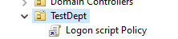
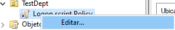
Una política pueden aplicar de dos formas:
a nivel de equipo : aplica a los equipos dentro de la OU pero no a los usuarios
a nivel de usuario : aplica a los usuarios dentro de la OU pero no a los equipos
Las directivas son políticas que van a ser estrictas y se van a ejecutar siempre y ademas se van actualizándose cada 90 min de forma obligatoria
.
Las preferencias son para que se configure algo o se ejecute de forma predeterminada pero se permite el cambio por parte del usuario
.
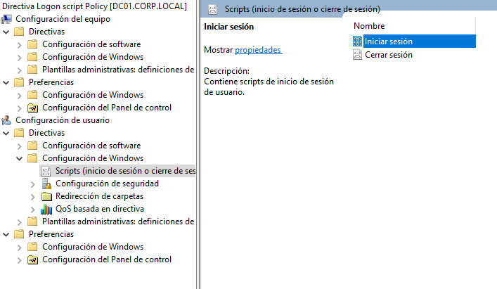
Vamos a configurar un script de inicio de sesión.
Creamos un archivo de texto, escribimos lo siguiente y lo guardamos como “test.bat”
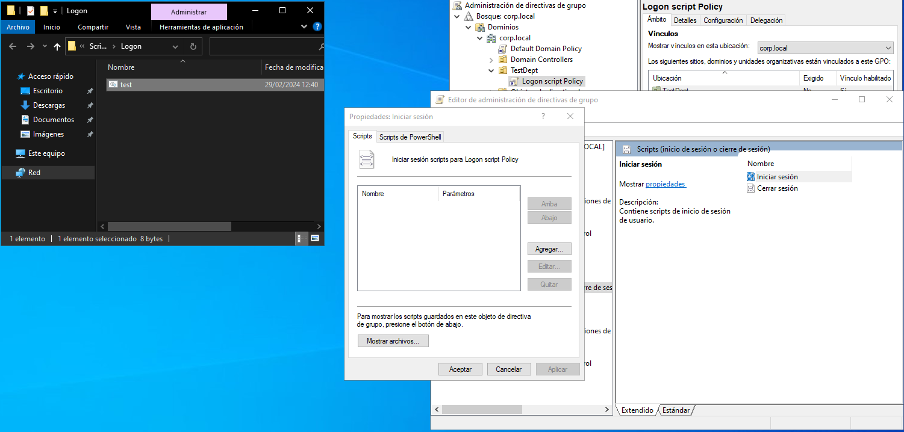
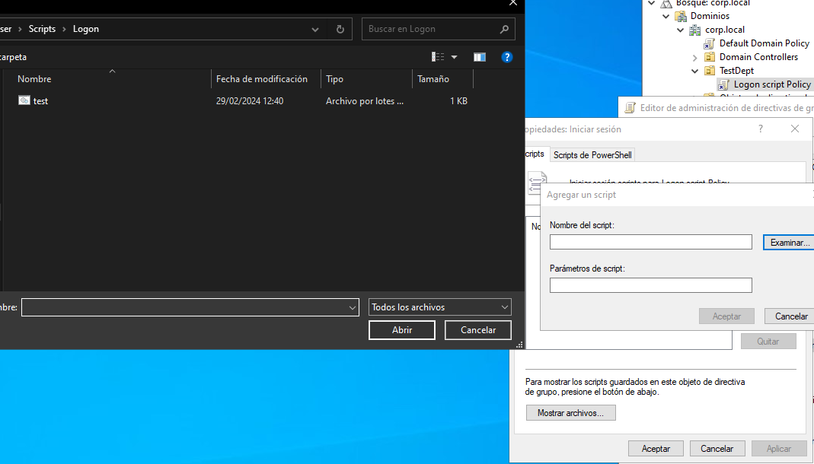
Aceptamos y aplicamos
.
Y ahora a todos los usuarios de ese grupo se le abrirá una calculadora al iniciar sesión
.
Ahora vamos a administrar los recursos compartidos
.
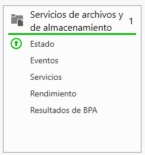
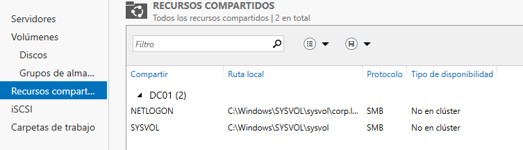
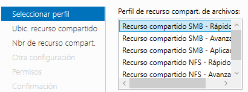
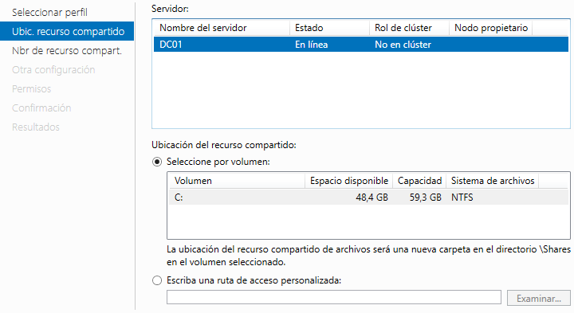
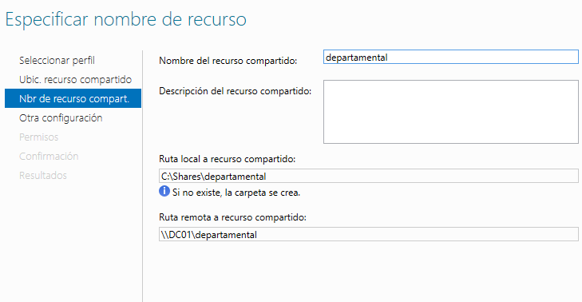
Aqui podemos administrar los permisos de acceso de los diferentes grupos y usuarios como vimos antes
.
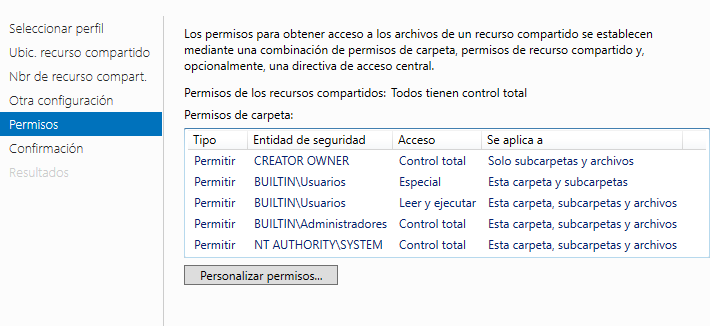
Por ejemplo para crear un script de que al iniciar la sesión los usuarios del grupo tengan el acceso a esta carpeta en red de forma automática en su explorador de windows creaamos igual que antes una politica de usuario para ese grupo y añadimos un script de inicio de sesión
:
net use t: \\192.168.20.5\departamental
Si nos fijamos a la hora de poner manualmente la dirección de los recursos compartidos vemos que por defecto en la carpeta /sysvol/ vemos las políticas y los scripts desde usuarios sin privilegios
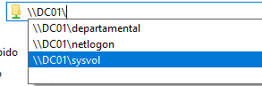
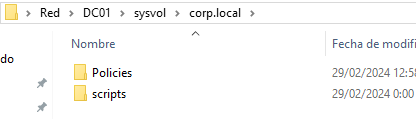